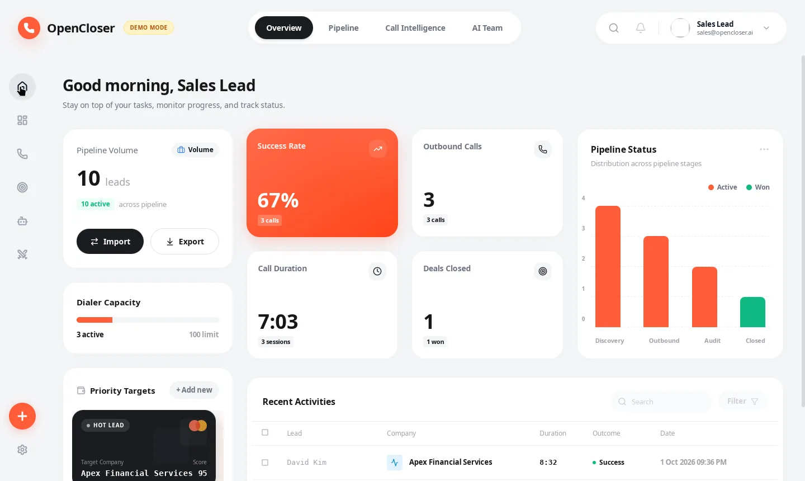
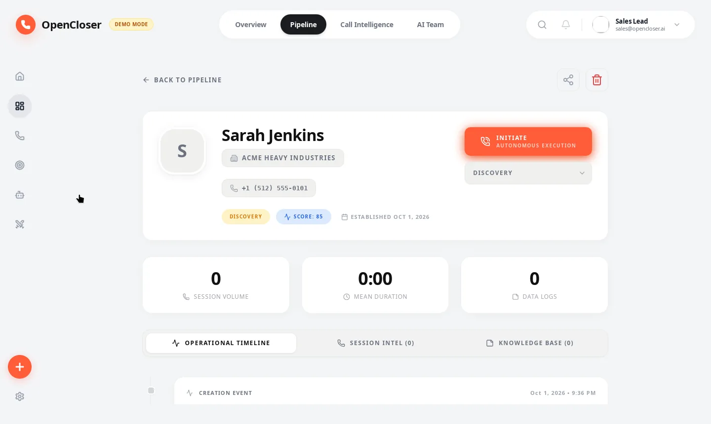
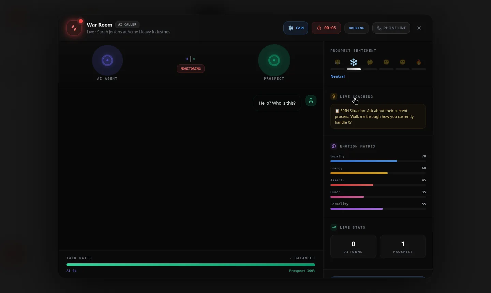

SDR software costs $1,000/month.
Ours costs $0.
OpenCloser
✱ THE OPEN SOURCE AI SDR

✱ WATCH IT SELL



● LIVE CALL
✱ LIVE COACHING
SPIN situation tip: ask about their current process.
5
AI AGENTS
100%
LOCAL
$0
FOREVER
OpenCloser.
Download free.
github.com/issacops/opencloser